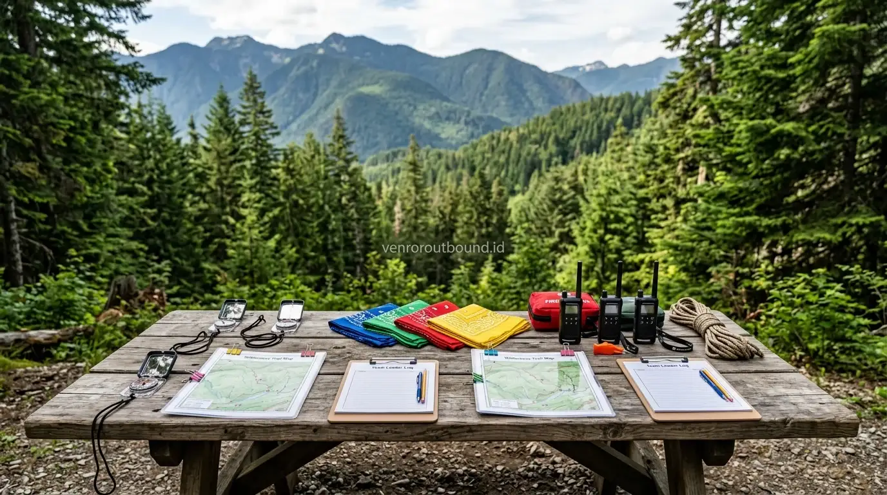

1. Mengapa Melatih Leadership Sejak Sekolah Menengah Menjadi Krusial?
Jawaban singkat: Membangun jiwa kepemimpinan pelajar sejak usia dini memerlukan media praktis di luar ruang kelas. Program outbound pelajar dengan simulasi kepemimpinan mengajarkan siswa cara mengambil keputusan taktis dan mengoordinasikan tim secara efektif di bawah situasi yang dinamis, melatih empati, serta menumbuhkan rasa tanggung jawab bersama dalam lingkungan yang aman dan terarah.
Masa sekolah menengah (SMP dan SMA) merupakan fase transisi krusial dalam perkembangan emosional dan psikososial peserta didik. Pada rentang usia ini, remaja mulai mencari identitas diri, belajar membangun hubungan sosial yang lebih luas, dan menghadapi tantangan pengambilan keputusan mandiri. Di tengah pesatnya interaksi digital, tantangan kepemimpinan di kalangan remaja kerap menjadi perhatian utama bagi kepala sekolah, wakil kesiswaan, maupun pembina OSIS.
Banyak pendidik mengamati bahwa pembelajaran kepemimpinan yang hanya bertumpu pada teks pelajaran di dalam kelas sering kali kurang membekas. Tanpa adanya panggung uji coba praktis, siswa cenderung ragu-ragu saat dihadapkan pada situasi nyata yang membutuhkan inisiatif, koordinasi regu, dan tanggung jawab moral. Di sinilah program outbound pelajar hadir sebagai jembatan pedagogis untuk mengasah kecakapan hidup (*life skills*) secara aplikatif.

Membangun Karakter Pelajar di Luar Kelas: Manfaat Nyata Edukasi Outdoor
Panduan bagi kepala sekolah dan guru tentang efektivitas metode pembelajaran di alam bebas.
2. Tujuh Aspek Kepemimpinan yang Dilatih Melalui Simulasi Outdoor
Melalui metode pembelajaran berbasis pengalaman (*experiential learning*), siswa ditempatkan pada skenario tantangan kelompok yang mengharuskan mereka bekerja sama. Ada tujuh pilar kompetensi yang terasah secara alami:
- Pengambilan Keputusan Taktis: Siswa diajak menganalisis situasi rintangan dengan waktu terbatas serta menimbang risiko bagi rekan satu regunya.
- Komunikasi Efektif Antar-Siswa: Menyampaikan instruksi secara jelas, mendengarkan masukan teman, dan meredam perbedaan pendapat.
- Pembagian Peran & Delegasi: Menempatkan anggota kelompok sesuai potensi masing-masing demi menyelesaikan misi bersama.
- Koordinasi Lapangan: Menjaga ritme kerja tim agar tetap selaras menuju garis akhir tanpa ada yang tertinggal.
- Rasa Tanggung Jawab Pribadi: Menyadari bahwa kontribusi setiap individu memengaruhi keberhasilan seluruh kelompok.
- Kerja Sama Tim (*Teamwork*): Menurunkan ego individu dan mengutamakan pencapaian target kolektif.
- Pemecahan Masalah (*Problem Solving*): Menemukan solusi kreatif ketika strategi awal menghadapi kebuntuan di lapangan.

Peralatan simulasi kepemimpinan dan media dinamika kelompok yang tertata rapi di area hijau terbuka.
3. Relevansi Outbound Leadership dengan Penguatan OSIS & Ekstrakurikuler
Pengurus OSIS, MPK, Pramuka, dan Palang Merah Remaja (PMR) adalah motor penggerak dinamika kesiswaan di sekolah. Namun, tidak jarang kepengurusan mengalami hambatan internal seperti miskomunikasi, kecemburuan peran, atau keengganan berinisiatif saat mengelola acara sekolah.
Pelatihan kepemimpinan berbasis alam terbuka (LDKS dan leadership camp) berfungsi sebagai wadah konsolidasi mental yang sangat efektif. Melalui simulasi berjenjang, calon pemimpin muda belajar mengelola dinamika kelompok, menerima evaluasi konstruktif saat sesi *debriefing*, serta menumbuhkan empati kepemimpinan yang melayani sesama.

Outbound Pelajar vs Class Meeting: Mana yang Lebih Efektif Bangun Karakter?
Kajian perbandingan untuk membantu waka kesiswaan merancang agenda kesiswaan yang bermakna.
4. Tahapan Penyesuaian Modul Kepemimpinan Berdasarkan Jenjang Usia
Desain aktivitas luar ruang tidak dapat disamaratakan untuk semua tingkatan. Penyelenggara kegiatan profesional merancang stimulasi yang selaras dengan tahap tumbuh kembang siswa:
A. Jenjang Sekolah Dasar (SD Kelas 4–6)
Fokus pada pembiasaan disiplin diri, gotong royong, keberanian mengungkapkan pendapat, serta pengenalan empati terhadap teman sebaya melalui permainan ceria.
B. Jenjang Sekolah Menengah Pertama (SMP)
Penekanan pada komunikasi interpersonal, resolusi konflik kecil, adaptasi kelompok acak, serta tanggung jawab atas peran yang diamanahkan dalam regu.
C. Jenjang Sekolah Menengah Atas/Kejuruan (SMA/SMK)
Simulasi strategi manajerial, manajemen krisis kelompok, negosiasi tim, serta refleksi kepemimpinan visioner untuk persiapan memasuki dunia organisasi dan masyarakat luas.

Paket Outbound Sekolah Karakter Edukatif & Terlengkap 2026
Ulasan modul character building, LDKS OSIS, standar safety, dan rincian fasilitas kegiatan sekolah.
5. Sinergi Fasilitator Outbound dan Guru Pendamping
Keberhasilan program pembentukan karakter di luar ruang bertumpu pada kolaborasi yang erat antara pihak sekolah dan tim fasilitator. Guru pendamping memegang peranan penting dalam mengenali riwayat khusus siswa, sementara fasilitator outbound bertugas memandu dinamika permainan dengan aman serta memfasilitasi sesi refleksi agar nilai-nilai moral dapat diserap secara mendalam.
Siapkan Generasi Pemimpin Sekolah Anda
Undang fasilitator kami untuk mengisi sesi kepemimpinan di sekolah Anda via WA +62 82211221909. Kami siap membantu merancang modul LDKS dan outbound karakter yang terstruktur dan aman.
Hubungi Vendor Outbound via WhatsApp6. Kesimpulan
Melatih kepemimpinan sejak usia sekolah menengah adalah investasi jangka panjang dalam pembentukan karakter generasi muda. Dengan memadukan metode pembelajaran teori di kelas dan pengalaman langsung melalui simulasi outbound pelajar, siswa tidak hanya memahami konsep kepemimpinan secara kognitif, melainkan juga mempraktikkannya dalam sikap nyata sehari-hari: saling menghargai, berani mengambil inisiatif, dan mampu bekerja sama demi kebaikan bersama.
Pertanyaan Sering Diajukan (FAQ)

Arby Ardiansyah
Arby Ardiansyah adalah praktisi pengembangan program dan penyusun konten edukasi luar ruang di Vendor Outbound, berfokus pada perancangan simulasi kepemimpinan, dinamika kelompok, dan penguatan karakter peserta didik di lingkungan pendidikan.